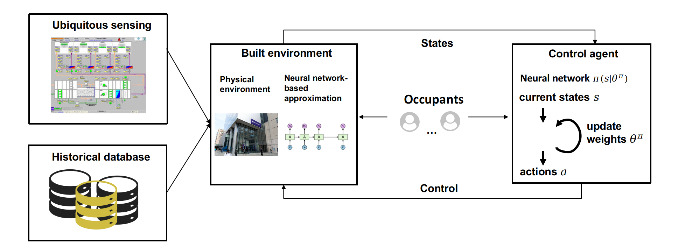

About: Intelligent Construction (ICon) Lab
is a multidisciplinary research group at The University British Columbia that focuses on advancing the knowledge of
automation and intelligence technologies in the life-cycle of design, construction and maitanenece of civil infrastructures.
Achieving optimal control of HVAC systems using Reinforcement Learning
Building sector consumes more than 70% of the total energy produced in the U.S.
Heating Ventilation and Air Conditioning (HVAC) systems account for almost half of the building energy consumption.
Hence, there is a need to reduce the energy consumption of HVAC systems while maintaining the thermal comfort of building occupants

Quantifying human experience in spaces with VR and biometric sensors

People spend more than 80% of the their time indoors. Quantifying human experience in designed spaces is essensial for understanding occupants' comfort towards architectural design features and maximizing human experience in future design.
Quantifying human experience in spaces with VR and biometric sensors

Donec eget ex magna. Interdum et malesuada fames ac ante ipsum primis in faucibus. Pellentesque venenatis dolor imperdiet dolor mattis sagittis magna etiam.